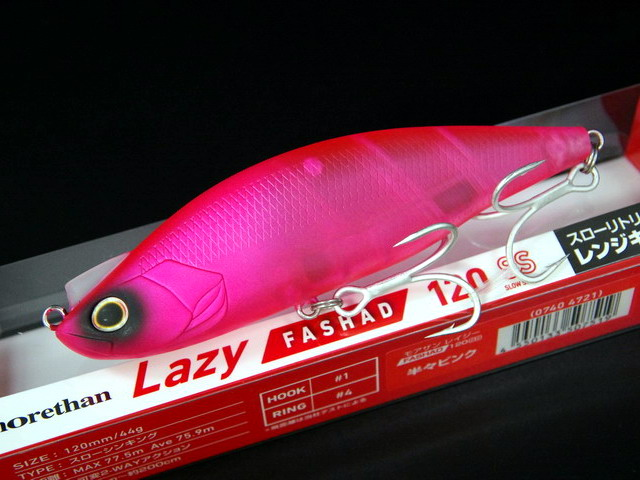
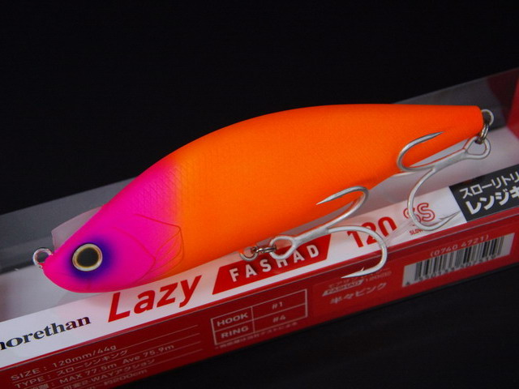
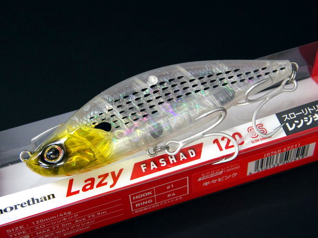

モアザン レイジーファシャッド120SS
（MORETHAN LAZY FASHAD 120SS）
モアザン レイジーファシャッド120SS（MORETHAN LAZY FASHAD 120SS）はDAIWA（ダイワ）モアザンシリーズのS字系シンキングペンシルです。
タイトローリング＆ワイドS字スラロームの2WAYアクションで人気の「レイジーファシャッド」に加わった、大型ベイトパターン対応の120mmモデル。流れの緩い場所や中層をスローに引けるスローシンキングで、コノシロなど大型ベイトを食べているシーバスにじっくり見せられるのが最大の魅力です。

画像出典:DAIWA公式HP
スペック
- メーカー
- DAIWA（ダイワ）
- タイプ
- スローシンキング
- 全長
- 120mm
- 自重
- 44g
- 潜行レンジ
- 約30〜200cm
- フック
- #1×2
- リング
- #4
- アクション
- タイトローリング＆ワイドS字スラロームの可変2WAY
- ターゲット
- シーバス
- 価格
- 2,365円（税込）
▼今すぐチェック

モアザン レイジーファシャッド120SSの特徴
大型ベイトパターンを、中層スローで攻めるワイドS字スラローム
-
速さで変わる可変2WAYアクション
デッドスローではボディを小刻みに揺らすタイトローリング、ノーマルの巻き速度ではワイドなS字スラローム、高速では強い波動の高速S字スラロームに変わり、時折千鳥アクションも入る。
-
中層をスローに引けるスローシンキング
フォールスピードが遅く、巻く速度を落としても沈みにくい。流れの緩い場所や中層を、大型ベイトのようにゆっくり見せられる。
-
ランカーが好むラトルサウンド
120mm・44gのボリュームに、ランカーシーバスが好むラトルサウンドを搭載。大型ベイトの中でもルアーの存在に気づかせる。
モアザン レイジーファシャッド120SSの使い方
基本はただ巻き。着水後に狙いのレンジまで沈めたら、ノーマルの巻き速度でワイドなS字スラロームを出し、中層をゆっくり引いてくるのが基本です。
反応が渋い時はデッドスローに落としてタイトローリングで食わせ、活性が高い時は速巻きで強い波動のS字を出すなど、巻き速度だけで動きを切り替えて探りましょう。
モアザン レイジーファシャッド120SSの得意な状況
シーバスがコノシロなど大型ベイトを、流れの緩い場所や中層で捕食している状況が最大の出番。
流れの強い場所よりも、港湾部や河川の緩い流れ、中層にベイトが溜まっている時に選びたい1本です。
大型ベイトに付いたシーバスに中層でじっくり見せられるので、ランカーが釣れるチャンスを作れる1本です。
ワンポイント
スローシンキングなので、レンジは着水後のカウントで決めるのがコツです。反応があったカウントを覚えておき、同じレンジを繰り返し通すと、魚のいる層を絞り込みやすくなります。
もう少し小さいシルエットで飛距離を出したい時は、同じレイジーファシャッドの100S（100mm・31g）に持ち替えると使い分けがしやすくなります。
人気カラー
モアザン レイジーファシャッド120SSは、コノシロ系やアピール系など多彩なカラーを展開。その中から人気カラーを紹介します。
 マットライムチャート
マットライムチャート
マットなライムチャート。濁りや朝夕マズメで目立たせたい時に。

半々ピンクマットなピンク系のアピールカラー。濁り潮やローライト時に存在感を出したい時に。

マットピンクヘッド オレンジロ頭がピンク、ボディがオレンジのアピール系。朝夕マズメや夜の常夜灯まわりに。

SGケイムラクリアコノシロケイムラ入りのクリア系コノシロカラー。澄み潮や日中のコノシロパターンに。
画像出典:DAIWA公式HP（マットライムチャート）／キングフィッシャー（半々ピンク・マットピンクヘッド オレンジロ・SGケイムラクリアコノシロ）
モアザン レイジーファシャッド120SSに似ているルアー
-
 ウルトラスラローム120S
HIGH RAD
詳細はこちら＞
ウルトラスラローム120S
HIGH RAD
詳細はこちら＞
高橋優介さんが開発した「超ワイドS字×遠投」のS字系ルアー。沖のシャローでワイドなS字を使いたい時に。
-
 スネコン130S
ブルーブルー
詳細はこちら＞
スネコン130S
ブルーブルー
詳細はこちら＞
130mm・23gのS字系シンペン。流れの中で超ワイドなS字を描かせたい時に。
-
 モアザン スイッチヒッター105S
ダイワ
詳細はこちら＞
モアザン スイッチヒッター105S
ダイワ
詳細はこちら＞
同じダイワのS字系シンペン。105mm・21.2gで、河川のドリフトやもう少し軽いシルエットで見せたい時に。